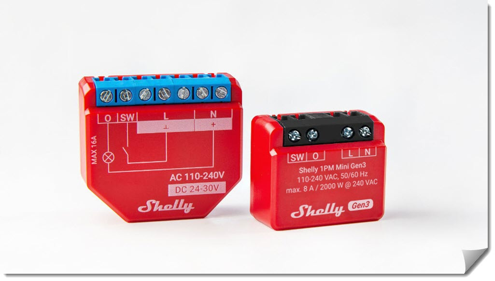
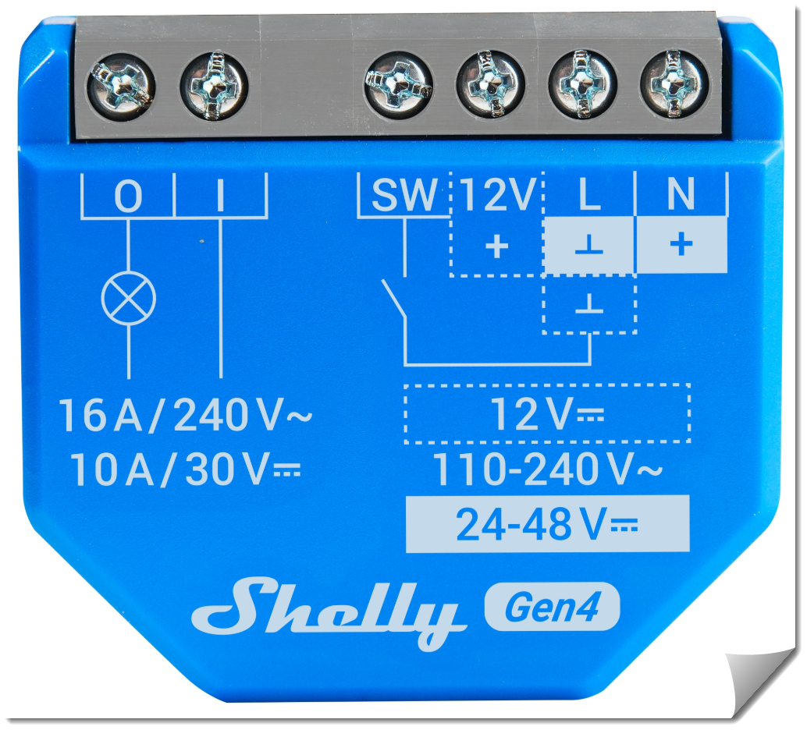
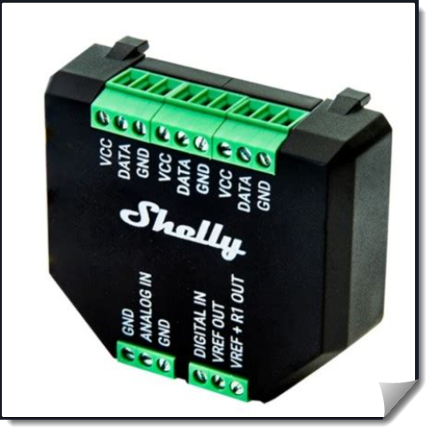

Sie können Verbraucher schalten, Messwerte erfassen und über WLAN mit einer App, Weboberfläche oder anderen Geräten wie einem ESP32 kommunizieren.
Für den Einsatz in der AG kommen nur Modelle in Frage, deren Versorgungsspannung 12 V bzw. 24-48 V beträgt.
Neben dem Shelly Plus 1 haben wir Shelly Plus 2PM und Shelly Plus Add-on zur Verfügung.



Am Beispiel des Shelly Plus 1 werden die Funktionen und Möglichkeiten der Geräts erklärt.
Mögliche Themen im Rahmen der AG:
- Shelly im Access Point-Modus
Modul vorbereiten, Vorbereitung für Access Point-Modus, Weboberfläche des Shellys kennenlernen
- Shelly im Station-Modus
Station-Modus aktivieren und testen, Probleme beim gleichzeiigen Betrieb in diesen Modi
- Weboberfläche des Shellys
Die Einstellungen des Shelly können über die **Weboberfläche** vorgenommen werden. - Scripting mit Shelly
Das Scripting-Framework von Shelly kennenlernen und anwenden. - Kommunikation mit Shelly über ESP32
Ein ESP32 kommuniziert mit dem Shelly über HTTP-Requests und kann so das Relais schalten und den Status abfragen.